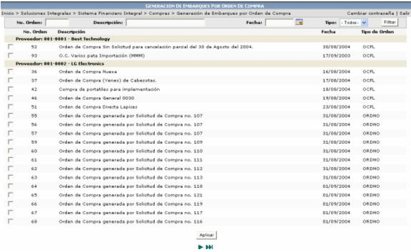

En esta pantalla se muestran todas las órdenes de compra que no se les especifico, que generaran automáticamente Tracking.
Si por algún motivo se
requiere que una de estas órdenes genere Tracking, el usuario solamente
tiene que seleccionar la orden que desea y presionar el botón  .
.
Una vez realizado lo anterior el usuario podrá administrar y darle seguimiento a ese Tracking desde la opción Cálculo de Importaciones (Administración de Embarques / Seguimiento de Embarques)
